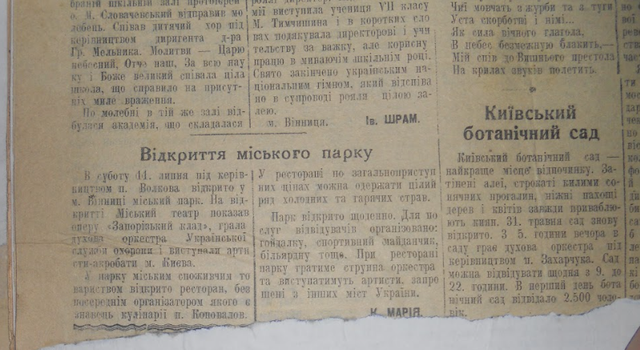
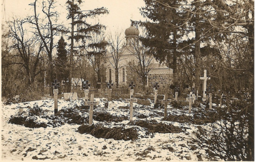
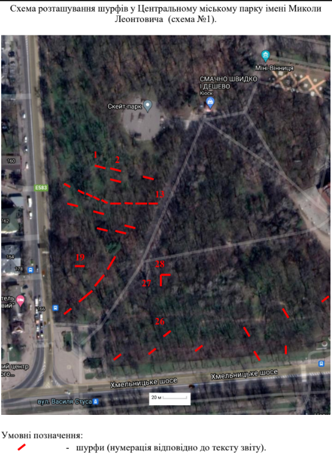
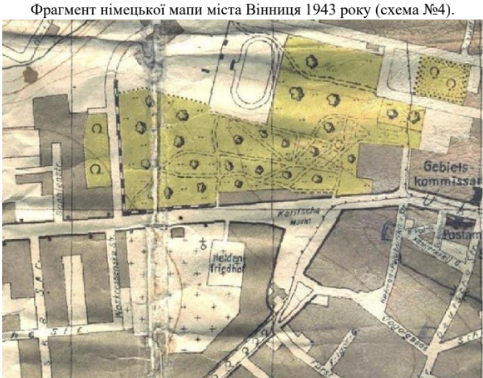
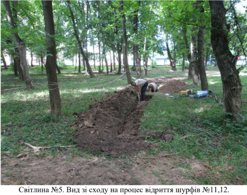

Історична карта 1945 року
Перейти до карти
Історія Центрального парку розпочалась задовго до подій 1937- 1938 року. Місце, яке по праву називається серцем Вінниці, ще 150 років тому мало зовсім інший вигляд. До розширення паркової зони, в південно-східній її частині знаходилися залишки польського римо-католицького цвинтаря. У 1936 році радянська влада назавжди закрила цвинтар, поховавши його під силою радянських бульдозерів. Та це не єдиний злочин, свідком якого став наш парк.
У роки нацистської окупації офіційно міський парк було відчинено для громадян 11 липня 1942 року під керівництвом пана Волкова. В той день міський театр показав оперу «Запорізький клад», грав духовий оркестр Української служби охорони (допоміжного підрозділу, створеного нацистами), виступали артисти-акробати з міста Києва. Парк був відкритий щоденно, а на його території функціонував ресторан зі струнним оркестром та живими виступами.
Однак таку німецьку «ідилію» порушує той факт, що декілька років назад на території парку було влаштовано масове поховання людей; потім через десятки років історики будуть називати їх жертвами «Вінницької трагедії». Це буде одне з декількох таких поховань на території міста. Протягом 1937–1938 років Вінницьким УНКВС будуть впроваджені масові знищення мирного населення за наказом очільника Вінницької спецслужби НКВС – Івана Корабльова, який буде своїми діями тільки збільшувати кількість репресованих. За наказом «центру» радянської верхівки він та його співробітники шукали ворогів та зрадників тодішньої влади.
Згідно з оцінками істориків, які займаються історією радянських злочинів 1930-х років, було репресовано понад 20 тисяч громадян, з яких 13–16 тисяч розстріляно. Ключовим місцем страт стало непримітне подвір’я будинку НКВС, оточене автомобільними гаражами на сучасній вулиці Хлібній. Вони стоять там і досі, а їх стіни назавжди зберігають відбитки куль на своїх стінах. Після розстрілів тіла вивозили до завчасно підготовлених ям у трьох частинах міста, включаючи Центральний парк. Саме територію колишнього римо-католицького цвинтаря будуть використовувати як допоміжну поховальну зону для злочинів НКВС. Влада віддасть наказ засадити її молодими деревами та кущами, а також влаштувати дитячий майданчик на місцях братських могил; згодом там почне просідати ґрунт.
Трагедія Голокосту також не оминула парк. На території стадіону в 1941 році відбувся масовий перепис міських євреїв під фальшивим приводом відправки у гетто. Вже 16 квітня 1942 року було проведено ще одне масове вбивство: однак тоді колони людей, зібраних на території вже згаданого стадіону, просто вивезли до П’ятничанського лісу та стратили.

Можливо, ми б і не дізнались би про злочини «великого терору», якби не опосередковані дії німецької окупаційної влади у Вінниці. Розкопки та ексгумація жертв розпочалась у травні 1943 року за підтримки спеціальної комісії. Головною мотивацією таких дій було завоювання прихильності жителів міста до влади, яку не сприймали і не вважали довготривалою. Адже у той рік Червона армія успішно розпочала контрнаступ, у тому числі територією України. Безпосередньо на території Центрального парку було знайдено 1383 жертви. До міста приїздили люди в пошуках своїх зниклих друзів та родичів. Впізнавали останніх по клаптях одягу, аксесуарам або іншим особистим прикметам. Ексгумовані тіла були перепоховані на території колишнього фруктового саду (нині Центральне кладовище міста Вінниці).

З поверненням радянської влади частина впізнаних учасників та свідків розкопок, які проводили німці, були репресовані. Радянська влада, знов маніпулюючи історією, назвала могили в Центральному парку «місцями жертв фашистського режиму», щоб приховати власні злочини проти громадян. Попри намір переписати події тих років, історики вже незалежної України, родичі очевидців та активісти не дали цьому статися. Розкопки продовжувалися до повномасштабного вторгнення РФ, в польовий сезон 2021 року пошуковою організацією «Пам’ять і слава».

Тоді дослідники перевіряли свідчення місцевої жительки щодо місць поховання німецьких військових часів окупації. І випадково натрапили на одну із могил жертв масових репресій НКВС 1937–1938 років, звідки були ексгумовані останки нацистською окупаційною владою ще у 1943 році. Війна стала на заваді подальших досліджень парку та інших місць масових поховань у Вінниці.

Це тільки один з прикладів, коли ми – українці, як свідома нація, хочемо знати правду про минуле, навіть якщо воно трагічне. Це актуалізує історичну пам'ять цілого народу, об’єднує, дає зрозуміти хто наш ворог. У часи війни в нашій країні, ми стикаємось зі схожими наслідками діями загарбників, від яких потерпають не тільки військові, а й мирні жителі окупованих територій. Попереду в наших дослідників, істориків, антропологів та судмедекспертів багато роботи з відновлення свідчень жертв вже цієї війни.

Сьогодні Центральний парк сприймається інакше: це улюблене місце вінничан для відпочинку та прогулянок, свят і ярмарок. Історію цього місця не змінити, а події, що забрали стільки життів, не можна ні пробачити, ні забути. У 2004 році на місці ексгумації 1937–1938 років, біля кіноконцертного залу «Райдуга», був встановлений пам’ятний знак. А кожної третьої неділі травня в Україні відзначається «День пам'яті жертв політичних репресій». В цей час там завжди можна побачити свіжі квіти.
Вічна пам'ять загиблим та постраждалим. Вони не забуті.
Автор: Бонюк Анастасія
Цікаві місця

Всі права захищені.